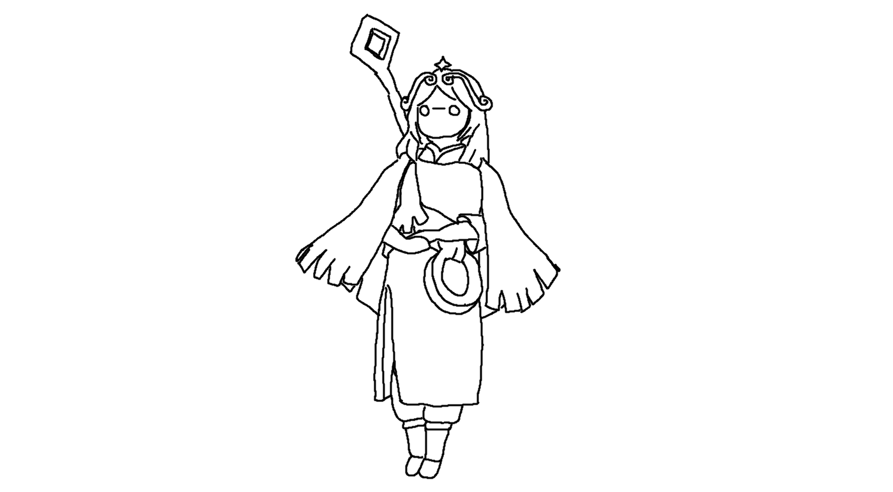
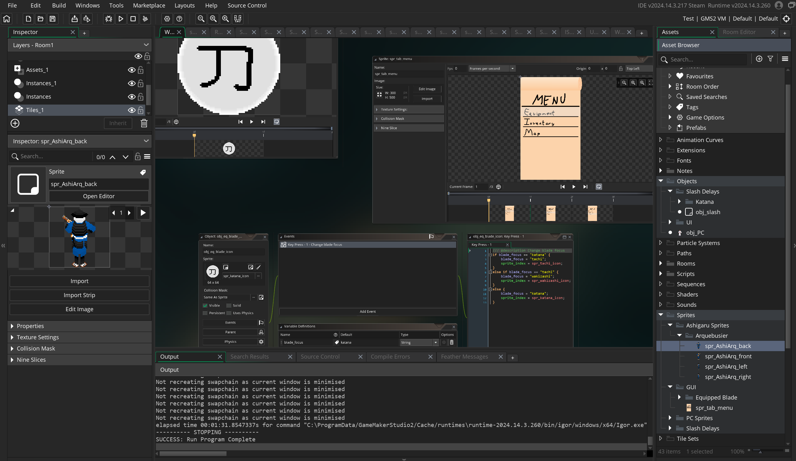

I've tried doing art. I'm bad at it, but I'm making progress. Here's a couple sketches I've made:
(Some images had to be upscaled to make the carousel work properly. Also some of these were made in snipping tool, so I had very limited tools
and palate)
I've tried to get into game development a few times, but I've never come close to making a final product. Unsuprisingly, indy game development is hard, you have to do all programming, story, art, animation, sound design, and everr thing else that goes into making a game. I've decided to put my projects on hold until after university, and try to improve my drawing, 3D modeling, and animation skills in the meantime. That way, I'll be better at all the software and visual elements before I start in proper. Here's a screenshot of some of the stuff from a scrapped game idea I was working on in highschool (made using GameMaker Studio 2):
